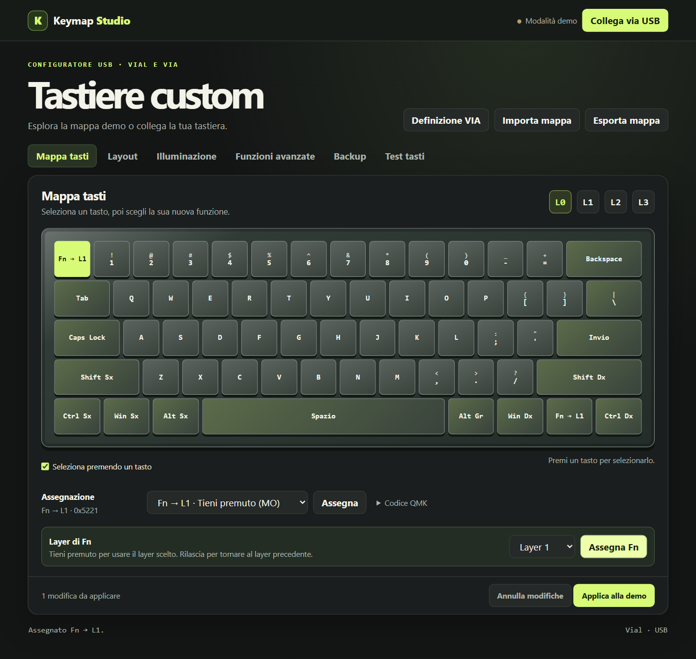
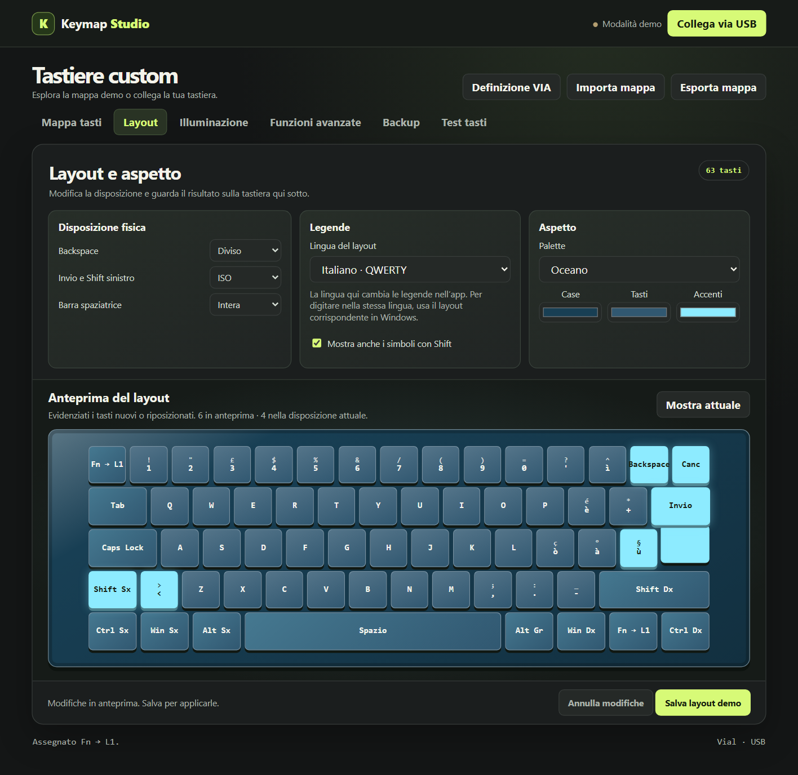
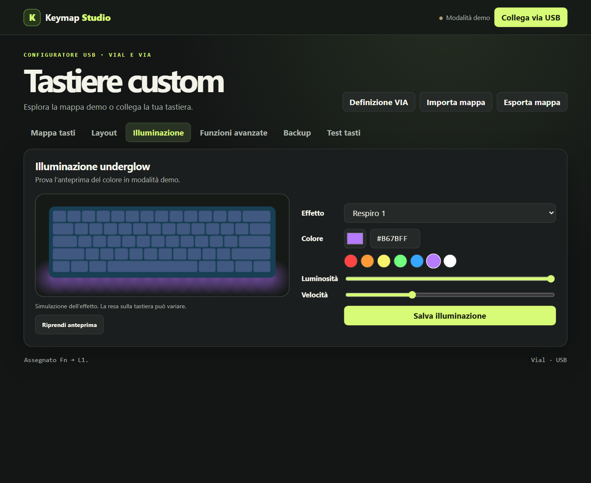

Windows
Portable x64 executable
EXE · x64 ↓Open-source custom keyboard configurator
Remap keys, create Fn layers and preview lighting effects. Keymap Studio runs offline and works without an installer.
v0.6.0 · Windows · macOS · Linux

Choose the portable package for your operating system.
Portable x64 executable
EXE · x64 ↓Unzip and open the application
Extract and run keymap-studio
TAR.GZ · x64 ↓The macOS package is not notarized. Linux USB access may need a udev rule. Linux USB guide ↗
Explore what you can configure.
Select a key on screen or press it. Assign a new action, shortcut or momentary Fn layer.
Compare physical variants, choose legends for ten layouts and preview animated RGB effects.
Configure macros, combos and encoders where supported, and back up your keyboard settings.


Available features depend on the installed firmware.
Open the app and connect the keyboard. Keymap Studio reads the layout and layers directly from the firmware.
Import the manufacturer's VIA JSON, then connect the matching keyboard. Standard VIA features are supported.
USB workflows were verified with simulated devices. Proprietary VIA menus and firmware flashing are outside this release.
The source code and build instructions are available under GPL-2.0-or-later. When reporting a problem, include your keyboard model and firmware version.